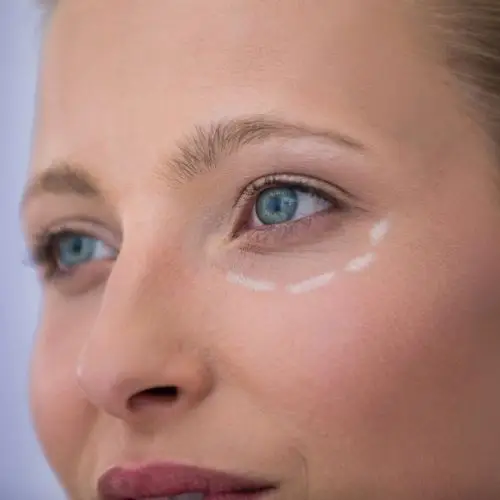

Plastische und Ästhetische Chirurgie
Formende und ästhetische Eingriffe an Gesicht, Brust und Körper sowie minimalinvasive ästhetische Medizin.
Behandlungsübersicht
Die Behandlungen sind in klare medizinische Bereiche gegliedert. So finden Patientinnen und Patienten schneller heraus, ob es um eine ästhetisch-plastische Fragestellung, eine rekonstruktive Operation, Handchirurgie oder einen Eingriff speziell für Männer geht.
Nach Körperregion wählen
Bereiche
Formende und ästhetische Eingriffe an Gesicht, Brust und Körper sowie minimalinvasive ästhetische Medizin.
Wiederherstellung von Form und Funktion, unter anderem durch mikrochirurgische Verfahren, Tumorchirurgie und Brustrekonstruktion.
Behandlung funktioneller Beschwerden, Verletzungsfolgen und Erkrankungen der Hand.
Diskrete Beratung und operative Konzepte für männliche Patienten, etwa bei Brust, Körperkontur oder Gesicht.

Korrektur von Schlupflidern oder Tränensäcken für einen wacheren, natürlichen Blick.
Mehr erfahrenStraffung von Gesicht und Kontur mit Fokus auf natürliche Wirkung.
Mehr erfahrenÄsthetische und funktionelle Harmonisierung der Nase.
Mehr erfahrenGezielte Entspannung mimischer Muskulatur bei dynamischen Falten.
Mehr erfahrenKontur, Volumen und Feuchtigkeitsbindung mit zurückhaltender Dosierung.
Mehr erfahrenKonzepte zur Verbesserung von Hautbild, Struktur und Ausstrahlung.
Mehr erfahrenFormung, Verkleinerung oder harmonische Anpassung der Brust.
Mehr erfahrenFormverbesserung bei abgesunkenem Gewebe und natürlichen Proportionen.
Mehr erfahrenStraffung überschüssiger Haut und Stabilisierung der Bauchkontur.
Mehr erfahrenKonturierung lokaler Fettdepots bei stabiler Ausgangssituation.
Mehr erfahrenUnterstützung körpereigener Regenerationsprozesse und Gewebequalität.
Mehr erfahrenStimulation der Hautstruktur mit natürlicher, schrittweiser Verbesserung.
Mehr erfahrenFeine Gewebeverlagerungen und Wiederherstellung komplexer Defekte.
Mehr erfahrenEntfernung und Wiederherstellung nach Tumorerkrankungen mit funktionellem und ästhetischem Anspruch.
Mehr erfahrenRekonstruktive Verfahren nach Erkrankung, Voroperation oder Gewebeverlust.
Mehr erfahrenDiagnostik und Behandlung von Erkrankungen, Beschwerden und Verletzungsfolgen der Hand.
Mehr erfahrenDiskrete Konzepte für Brust, Körperkontur, Gesicht und rekonstruktive Fragestellungen bei Männern.
Mehr erfahrenAblauf
Anliegen, Erwartungen, Risiken und Alternativen werden besprochen.
Untersuchung, Aufklärung, Fotodokumentation bei Bedarf und realistischer Zeitplan.
Durchführung nach medizinischen Standards und mit maximaler Sorgfalt.
Nachsorge, Heilungsverlauf, Verhaltensempfehlungen und Ergebnisbeurteilung.
Weitere Orientierung
Direktkontakt
Wir nehmen uns Zeit für eine diskrete, individuelle Beratung. Im Gespräch klären wir medizinische Möglichkeiten, sinnvolle Alternativen und die nächsten Schritte.
 Zweitmeinung
Zweitmeinung